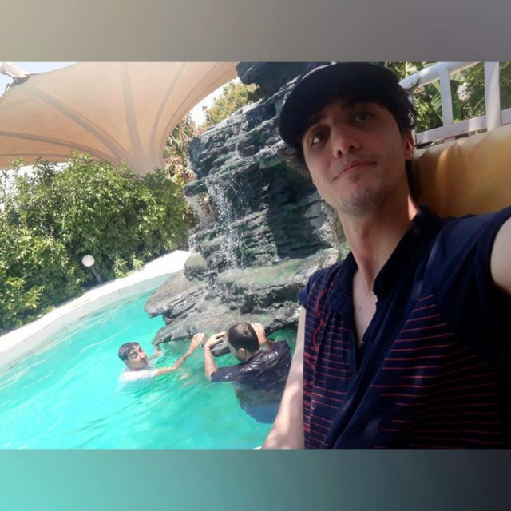

Instructor
Course Assistants


Milad_Raeisi

Mohammad_Heydari
Mohammad_Sepehri
Mojtaba_Amiri

Shahla_Daneshi

Siavash_Razmi

Siavash_Shams
Seyed_Mohammad_Dashti
Danyal_saedi
Sajjad_Alikhani
Office Hours
| Lectures | Sunday, Tuesday | 9:00 am - 10:30 am |
Grading
| Exams | 50 % |
| Homeworks | 60 % |
| Projects | 40 % |
| Extra Credit | 5% |
- Late day policy: Each student has a total of seven late days for the entire semester. Late days can be used for labs, paper reviews, and project checkoffs but not for the project presentation and report.
- Students may choose to allocate all 7 late days to one submission or evenly distribute them across multiple submissions.
- If a student doesn’t have any remaining late days, late submissions will incur a 10% penalty per day.
- The late days for a team of 2-3 students during the project phase are the minimum remaining late days of the team members.
Labs
- Ask questions on our Piazza forum.
- Labs will be posted as links in the outline below. Please submit completed labs via Gradescope. See Piazza for the entry code.
- Labs will be challenging and graded for correctness.
Course Outline
| Week | Date | Lecture Topic | Readings | Paper Review (by Wednesday) | Labs/Projects |
|---|---|---|---|---|---|
| 1 | 1/20 | Class Organization & Introduction slides recording | |||
| 2 | 1/25 | Introduction to DNNs slides recording | AlexNet, NeurIPS'2012 | [Submit your review here.] | Lab 1 (due 2/5) |
| 1/27 | Introduction to DNNs 2 slides recording | ||||
| 3 | 2/1 | Quantization slides recording | Integer-Arithmetic-Only Inference, CVPR'2018 | [Submit your review here.] | |
| 2/3 | Kernel Computation slides recording | ||||
| 4 | 2/8 | Dataflow slides recording | cuDNN, arXiv'2014 | [Submit your review here.] | Lab 2 (due 2/19) |
| 2/10 | Accelerator slides recording | ||||
| 5 | 2/15 | Presidents' Day. No class! | TPU, ISCA'2017 | [Submit your review here.] | |
| 2/17 | Guest Lecture: The current state of Neural Network Quantization, Amir Gholami, UC Berkeley slides recording | ||||
| 6 | 2/22 | Chipyard/FireSim Overview and Setup, Abraham Gonzalez, UC Berkeley slides recording | FireSim, ISCA'2018 | [Submit your review here.] | Lab 3 (due 3/5) |
| 2/24 | Guest Lecture: Systolic Array and Tensorization: Key Components of A Deep-Learning Accelerator, Ron Diamant & Randy Huang, AWS slides | ||||
| 7 | 3/1 | Mapping slides recording | PHiPAC'ICS1997 | Optional reading. No review required. | |
| 3/3 | Data Orchestration slides recording | ||||
| 8 | 3/8 | Sparsity slides recording | SCNN'ISCA2017 | [Submit your review here.] | |
| 3/10 | Co-Design slides recording | ||||
| 9 | 3/15 | Guest Lecture: Configurable Cloud-Scale Real-Time Deep Learning, Bita Rouhani, Microsoft slides | No reading this week. | ||
| 3/17 | Other Operators & Near-Data slides recording | ||||
| 10 | 3/22 | Spring break! | No reading this week. | ||
| 3/24 | Spring break! | ||||
| 10 | 3/29 | Guest Lecture: Accelerating Software 2.0, Yaqi Zhang, SambaNova slides | No reading this week. | ||
| 3/31 | Training slides recording | ||||
| 11 | 4/5 | Accelerator-Level Parallelism slides recording | No reading this week. | ||
| 4/7 | Guest Lecture: Science to Fuel Neural Nets and TPU Design, Cliff Young, Google recording | ||||
| 12 | 4/12 | Guest Lecture: The Future of ML is Tiny and Bright, Vijay Janapa Reddi, Harvard University slides recording | No reading this week. | ||
| 4/14 | Advanced Technology slides recording | ||||
| 12 | 4/19 | Guest Lecture: Problems facing analog and in-memory computing, Brian Zimmer, NVIDIA recording | No reading this week. | ||
| 4/21 | End-to-end Deployment slides recording | ||||
| 13 | 4/26 | Conclusion slides recording | No reading this week. | ||
| 4/28 | Open office hour (no lecture). |
Resources
Textbooks/Courses
- Deep Learning Book, Ian Goodfellow, Yoshua Bengio, Aaron Courville
- Machine Learning, Andrew Ng, Coursera
- Neural Networks for Machine Learning, Geoffrey Hinton, Coursera
Honor Code
- If you turn in someone else’s work as if it were your own, you are guilty of academic misconduct. This includes problem sets, answers on exams, lab exercise checks, project design, and any required course turn-in material.
- Also, if you knowingly aid in academic misconduct, you are guilty.
- We have software that compares your submitted work to others.
- However, it is okay to discuss with others lab exercises and the project (obviously, okay to work with project partner). Okay to discuss homework with others. But everyone must turn in their own work.
- Do not post your work on public repositories like github (private o.k.)
- If we catch your academic misconduct, you will get negative points on the assignment: It is better to not do the work than to cheat! If it is a midterm exam, final exam, or final project, you get an F in the class. All cases of academic misconducts reported to the office of student conduct.
It is very important to the EECS Department that every student in
the EECS community feels safe, respected and welcome. We recognize
though that incidents happen, sometimes unintentionally, that run
counter to that goal. There are many things we can do to try to
improve department climate, but we need to understand where the
challenges lie. If you experience a remark, or disrespectful
treatment, or if you feel you are being ignored, excluded or
marginalized in a course or department-related activity, please
speak up. If you witness such treatment toward someone else, please
also say something. If you notice course content (such as lectures,
discussions, assignments, exams) that marginalize or alienate you,
please point them out. This is particularly important if the
offending actions/content are based on gender, race, age,
disability, or other protected category but it’s not always possible
to tell and so we encourage you to share with us in any case. The
more we hear, the more we can do to improve the climate in our
courses and department-supported activities. We also welcome
suggestions on things we could do to improve department climate.